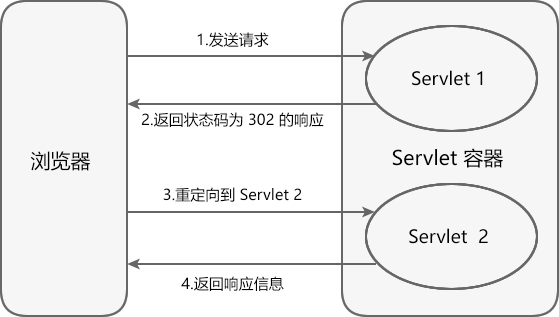
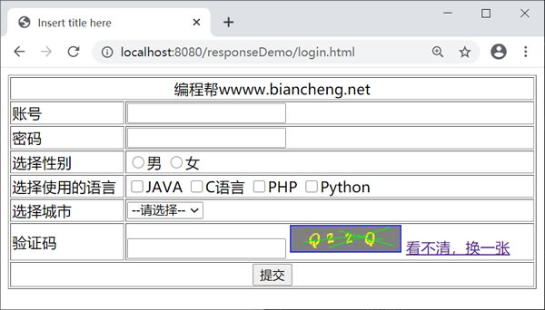
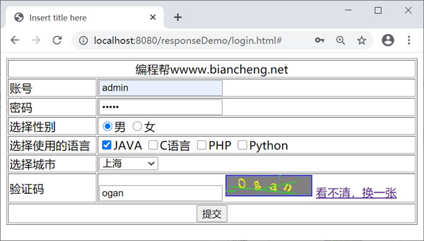
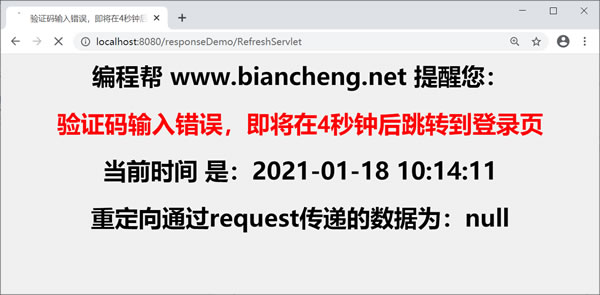
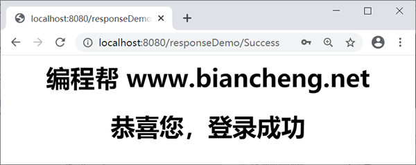

Servlet重定向
重定向属于客户端行为。服务器在收到客户端请求后，会通知客户端浏览器重新向另外一个 URL 发送请求，这称为请求重定向。它本质上是两次 HTTP 请求，对应两个 request 对象和两个 response 对象。
在 responseDemo 的 WebContent 中，创建登录页面 login.html，代码如下。
在 net.biancheng.www 包下，创建名称为 CheckcodeServlet 的 Servlet 类，代码如下。
在 net.biancheng.www 包下，创建名称为 DoServlet 的 Servlet 类，代码如下。
在 net.biancheng.www 包下，创建名称为 RefreshServlet 的 Servlet 类，代码如下。
在 net.biancheng.www 包下，创建名称为 SuccessServlet 的 Servlet 类，代码如下。
启动 Tomcat，在地址栏输入“http://localhost:8080/responseDemo/login.html”，访问登录页，如下图所示。
在登录页面输入账号、密码、验证码等信息（该实例中没有使用数据库，所以当账号和密码都为 admin 时验证成功，否则验证失败），这里我们输入错误的验证码点击提交按钮，结果如下图。
点击提交按钮，结果如下图，倒计时完成后，自动跳转到登录页面。
输入正确信息，点击提交，结果如下图。
重定向的工作流程
重定向的工作流程如下：

- 用户在浏览器中输入 URL，请求访问服务器端的 Web 资源。
- 服务器端的 Web 资源返回一个状态码为 302 的响应信息，该响应的含义为：通知浏览器再次发送请求，访问另一个 Web 资源（在响应信息中提供了另一个资源的 URL）。
- 当浏览器接收到响应后，立即自动访问另一个指定的 Web 资源。
- 另一 Web 资源将请求处理完成后，由容器把响应信息返回给浏览器进行展示。
转发和重定向的区别
转发和重定向都能实现页面的跳转，但是两者也存在以下区别。| 区别 | 转发 | 重定向 |
|---|---|---|
| 浏览器地址栏 URL 是否发生改变 | 否 | 是 |
| 是否支持跨域跳转 | 否 | 是 |
| 请求与响应的次数 | 一次请求和一次响应 | 两次请求和两次响应 |
| 是否共享 request 对象和 response 对象 | 是 | 否 |
| 是否能通过 request 域对象传递数据 | 是 | 否 |
| 速度 | 相对要快 | 相对要慢 |
| 行为类型 | 服务器行为 | 客户端行为 |
response.sendRedirect()
HttpServletResponse 接口中的 sendRedirect() 方法用于实现重定向。| 返回值类型 | 方法 | 描述 |
|---|---|---|
| void | sendRedirect(String location) | 向浏览器返回状态码为 302 的响应结果，让浏览器访问新的 URL。若指定的 URL 是相对路径，Servlet 容器会将相对路径转换为绝对路径。参数 location 表示重定向的URL。 |
示例
下面我们通过一个案例加深对 response 对象和重定向的理解。在 responseDemo 的 WebContent 中，创建登录页面 login.html，代码如下。
<!DOCTYPE html PUBLIC "-//W3C//DTD HTML 4.01 Transitional//EN" "http://www.w3.org/TR/html4/loose.dtd">
<html>
<head>
<meta http-equiv="Content-Type" content="text/html; charset=UTF-8">
<title>Insert title here</title>
</head>
<body>
<form action="/responseDemo/DoServlet" method="GET">
<table border="1" width="50%">
<tr>
<td colspan="2" align="center">
编程帮wwww.biancheng.net
</td>
</tr>
<tr>
<td>账号</td>
<td>
<input type="text" name="username"/>
</td>
</tr>
<tr>
<td>密码</td>
<td>
<input type="password" name="password"/>
</td>
</tr>
<tr>
<td>选择性别</td>
<td>
<input type="radio" name="sex" value="男"/>男
<input type="radio" name="sex" value="女"/>女
</td>
</tr>
<tr>
<td>选择使用的语言</td>
<td>
<input type="checkbox" name="language" value="JAVA"/>JAVA
<input type="checkbox" name="language" value="C语言"/>C语言
<input type="checkbox" name="language" value="PHP"/>PHP
<input type="checkbox" name="language" value="Python"/>Python
</td>
</tr>
<tr>
<td>选择城市</td>
<td>
<select name="city">
<option value="none">--请选择--</option>
<option value="北京">北京</option>
<option value="北京">上海</option>
<option value="广州">广州</option>
</select>
</td>
</tr>
<tr>
<td>验证码</td>
<td><input type="text" name="code"/>
<img id="imgId" src="/responseDemo/CheckcodeServlet">
<a href="#" onclick="run()">看不清，换一张</a>
</td>
</tr>
<tr>
<td colspan="2" align="center">
<input type="submit" value="提交"/>
</td>
</tr>
</table>
</form>
</body>
<script type="text/javascript">
// 看不清，换一张，时间戳
function run() {
// 获取图片
var image = document.getElementById("imgId");
image.src = "/responseDemo/CheckcodeServlet?" + new Date().getTime();
}
</script>
</html>
在 net.biancheng.www 包下，创建名称为 CheckcodeServlet 的 Servlet 类，代码如下。
package net.biancheng.www;
import java.awt.Color;
import java.awt.Font;
import java.awt.Graphics2D;
import java.awt.image.BufferedImage;
import java.io.IOException;
import java.util.ArrayList;
import java.util.List;
import java.util.Random;
import javax.imageio.ImageIO;
import javax.servlet.ServletException;
import javax.servlet.annotation.WebServlet;
import javax.servlet.http.HttpServlet;
import javax.servlet.http.HttpServletRequest;
import javax.servlet.http.HttpServletResponse;
/**
* 使用 Java 生成验证码图片
* 了解即可
* 可将 demo保存直接使用
* 并通过 response 对象展示在页面上
*
* @author 编程帮 www.biancheng.net
*/
@WebServlet("/CheckcodeServlet")
public class CheckcodeServlet extends HttpServlet {
private static final long serialVersionUID = 1L;
protected void doGet(HttpServletRequest request, HttpServletResponse response) throws ServletException, IOException {
int width = 120;
int height = 30;
// 在内存中生成图片
BufferedImage image = new BufferedImage(width, height, BufferedImage.TYPE_INT_RGB);
// 先获取画笔对象
Graphics2D g = (Graphics2D) image.getGraphics();
// 设置灰色
g.setColor(Color.GRAY);
// 画填充的矩形
g.fillRect(0, 0, width, height);
// 设置颜色
g.setColor(Color.BLUE);
// 画边框
g.drawRect(0, 0, width - 1, height - 1);
// 准备数据，随机获取4个字符
String words = "ABCDEFGHIJKLMNOPQRSTUVWXYZabcdefghijklmnopqrstuvwxyz1234567890";
// 设置颜色
g.setColor(Color.YELLOW);
// 设置字体
g.setFont(new Font("隶书", Font.BOLD, 20));
String code = "";
//构造存储字符的数组
char[] a = {};
//构造存储字符串的集合
List<String> list = new ArrayList<String>();
Random random = new Random();
int x = 20;
int y = 20;
for (int i = 0; i < 4; i++) {
// void rotate(double theta, double x, double y)
// theta 弧度
// hudu = jiaodu * Math.PI / 180;
// 获取正负30之间的角度
int jiaodu = random.nextInt(60) - 30;
double hudu = jiaodu * Math.PI / 180;
g.rotate(hudu, x, y);
// 获取下标
int index = random.nextInt(words.length());
// 返回指定下标位置的字符，随机获取下标
char ch = words.charAt(index);
//将字符存入字符数组中
char[] chc = {ch};
//使用字符数组构造字符串
String string = new String(chc);
//将构造好的字符串添加进list集合中
list.add(string);
// 写字符串
g.drawString("" + ch, x, y);
g.rotate(-hudu, x, y);
x += 20;
}
for (int i = 0; i < list.size(); i++) {
code += list.get(i);
}
//将验证码存入上下文中
getServletContext().setAttribute("code", code);
// 设置颜色
g.setColor(Color.GREEN);
int x1, x2, y1, y2;
// 画干扰线
for (int i = 0; i < 4; i++) {
x1 = random.nextInt(width);
y1 = random.nextInt(height);
x2 = random.nextInt(width);
y2 = random.nextInt(height);
g.drawLine(x1, y1, x2, y2);
}
// 输出到客户端
ImageIO.write(image, "jpg", response.getOutputStream());
}
protected void doPost(HttpServletRequest request, HttpServletResponse response) throws ServletException, IOException {
doGet(request, response);
}
}
在 net.biancheng.www 包下，创建名称为 DoServlet 的 Servlet 类，代码如下。
package net.biancheng.www;
import javax.servlet.ServletException;
import javax.servlet.annotation.WebServlet;
import javax.servlet.http.HttpServlet;
import javax.servlet.http.HttpServletRequest;
import javax.servlet.http.HttpServletResponse;
import java.io.IOException;
import java.io.PrintWriter;
/**
* 验证提交的信息
* @author 编程帮 www.biancheng.net
*/
@WebServlet("/DoServlet")
public class DoServlet extends HttpServlet {
private static final long serialVersionUID = 1L;
protected void doGet(HttpServletRequest request, HttpServletResponse response) throws ServletException, IOException {
//设置向页面输出内容格式
response.setContentType("text/html;charset=UTF-8");
PrintWriter writer = response.getWriter();
String username = request.getParameter("username");
// 获取密码
String password = request.getParameter("password");
// 获取性别
String sex = request.getParameter("sex");
// 获取城市
String city = request.getParameter("city");
// 获取爱好 返回是String数组
String[] languages = request.getParameterValues("language");
//获取验证码
String code = request.getParameter("code");
//设置是否成功标识
Boolean IsSuccess = true;
//从上下文获取存储的验证码
String code1 = (String) getServletContext().getAttribute("code");
//账号密码为admin.且验证码(忽略大小写)输入正确，则跳转到登陆成功页面
if (!"".equals(code) && code != null && code.equalsIgnoreCase(code1) && "admin".equals(username) && "admin".equals(password)) {
response.sendRedirect("/responseDemo/Success");
//账号密码不为admin,设置错误信息
} else if (!"admin".equals(username) || !"admin".equals(password)) {
getServletContext().setAttribute("msg", "账号或密码不正确");
IsSuccess = false;
//验证码错误，设置错误信息
} else if ("".equals(code) || code == null || !code.equalsIgnoreCase(code1)) {
getServletContext().setAttribute("msg", "验证码输入错误");
IsSuccess = false;
}
if (!IsSuccess) {
//设置自动跳转的时间，存储在上下文中
getServletContext().setAttribute("time", 5);
//向request对象中设置属性requestAttr,在重定向之后取值。
request.setAttribute("requestAttr", "重定向中使用request域对象传递的数据");
response.sendRedirect("/responseDemo/RefreshServlet");
}
}
protected void doPost(HttpServletRequest request, HttpServletResponse response) throws ServletException, IOException {
doGet(request, response);
}
}
在 net.biancheng.www 包下，创建名称为 RefreshServlet 的 Servlet 类，代码如下。
package net.biancheng.www;
import javax.servlet.ServletException;
import javax.servlet.annotation.WebServlet;
import javax.servlet.http.HttpServlet;
import javax.servlet.http.HttpServletRequest;
import javax.servlet.http.HttpServletResponse;
import java.io.IOException;
import java.text.SimpleDateFormat;
import java.util.Calendar;
import java.util.Date;
/**
* 登录失败后，提示错误信息并定时跳转回登录页
* 通过设置响应头字段（refresh）实现页面的定时跳转
*
* @author 编程帮 www.biancheng.net
*/
@WebServlet("/RefreshServlet")
public class RefreshServlet extends HttpServlet {
private static final long serialVersionUID = 1L;
public void doGet(HttpServletRequest request, HttpServletResponse response)
throws ServletException, IOException {
Object requestAttr = request.getAttribute("requestAttr");
//获取存在上下文中的跳转时间
int times = (int) getServletContext().getAttribute("time");
//获取存在上下文中的错误信息
String msg = (String) getServletContext().getAttribute("msg");
/**
*
* 设置三个头信息，禁用浏览器缓存
* Cache-Control : no-cache
* Expires: -1 值是日期类型（setDateHeader()）
* Pragma : no-cache
*/
response.setHeader("Cache-Control", "no-cache");
response.setHeader("Pragma", "no-cache");
response.setDateHeader("Expires", -1);
//
response.setContentType("text/html;charset=UTF-8");
//设置提示
String title = msg + "，即将在" +
times + "秒钟后跳转到登录页";
//使用默认时区和语言环境获得一个日历
Calendar cale = Calendar.getInstance();
//将Calendar类型转换成Date类型
Date tasktime = cale.getTime();
//设置日期输出的格式
SimpleDateFormat df = new SimpleDateFormat("yyyy-MM-dd HH:mm:ss");
//格式化输出
String nowTime = df.format(tasktime);
//只要倒计时时间没有到0，就直至输出下面内容
if (times != 0) {
response.getWriter().write("<html>\n" +
"<head><title >" + title + "</title></head>\n" +
"<body bgcolor=\"#f0f0f0\">\n" +
"<h1 align=\"center\">编程帮 www.biancheng.net 提醒您：</h1>" +
"<h1 align=\"center\" style=\"font-family:arial;color:red;\">" + title + "</h1>\n" +
"<h1 align=\"center\">当前时间 是：" + nowTime + "</h1>\n" +
"<h1 align=\"center\">重定向通过request传递的数据为：" + requestAttr + "</h1>\n");
//倒计时
times--;
//将倒计时的时间重新存入上下文中覆盖原来的值
getServletContext().setAttribute("time", times);
// 通过refresh头完成页面刷新
response.setHeader("refresh", "1;url=/responseDemo/RefreshServlet");
} else {
//倒计时归零，则跳转到登陆页面
response.sendRedirect("/responseDemo/login.html");
}
}
public void doPost(HttpServletRequest request, HttpServletResponse response)
throws ServletException, IOException {
doGet(request, response);
}
}
在 net.biancheng.www 包下，创建名称为 SuccessServlet 的 Servlet 类，代码如下。
package net.biancheng.www;
import java.io.IOException;
import java.io.PrintWriter;
import javax.servlet.ServletException;
import javax.servlet.annotation.WebServlet;
import javax.servlet.http.HttpServlet;
import javax.servlet.http.HttpServletRequest;
import javax.servlet.http.HttpServletResponse;
/**
* 登录成功
* @author 编程帮 www.biancheng.net
*/
@WebServlet("/Success")
public class SuccessServlet extends HttpServlet {
private static final long serialVersionUID = 1L;
protected void doGet(HttpServletRequest request, HttpServletResponse response) throws ServletException, IOException {
//设置响应输出的格式
response.setContentType("text/html;charset=UTF-8");
PrintWriter writer = response.getWriter();
writer.write("<h1>登录成功</h1>");
}
protected void doPost(HttpServletRequest request, HttpServletResponse response) throws ServletException, IOException {
doGet(request, response);
}
}
启动 Tomcat，在地址栏输入“http://localhost:8080/responseDemo/login.html”，访问登录页，如下图所示。

在登录页面输入账号、密码、验证码等信息（该实例中没有使用数据库，所以当账号和密码都为 admin 时验证成功，否则验证失败），这里我们输入错误的验证码点击提交按钮，结果如下图。

点击提交按钮，结果如下图，倒计时完成后，自动跳转到登录页面。

输入正确信息，点击提交，结果如下图。

关注公众号「站长严长生」，在手机上阅读所有教程，随时随地都能学习。内含一款搜索神器，免费下载全网书籍和视频。

微信扫码关注公众号